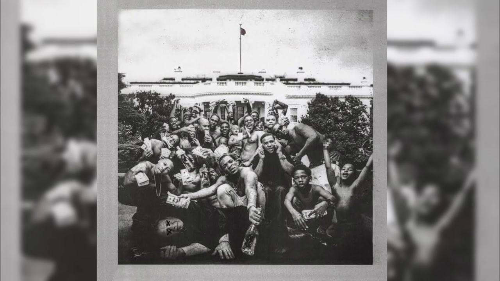
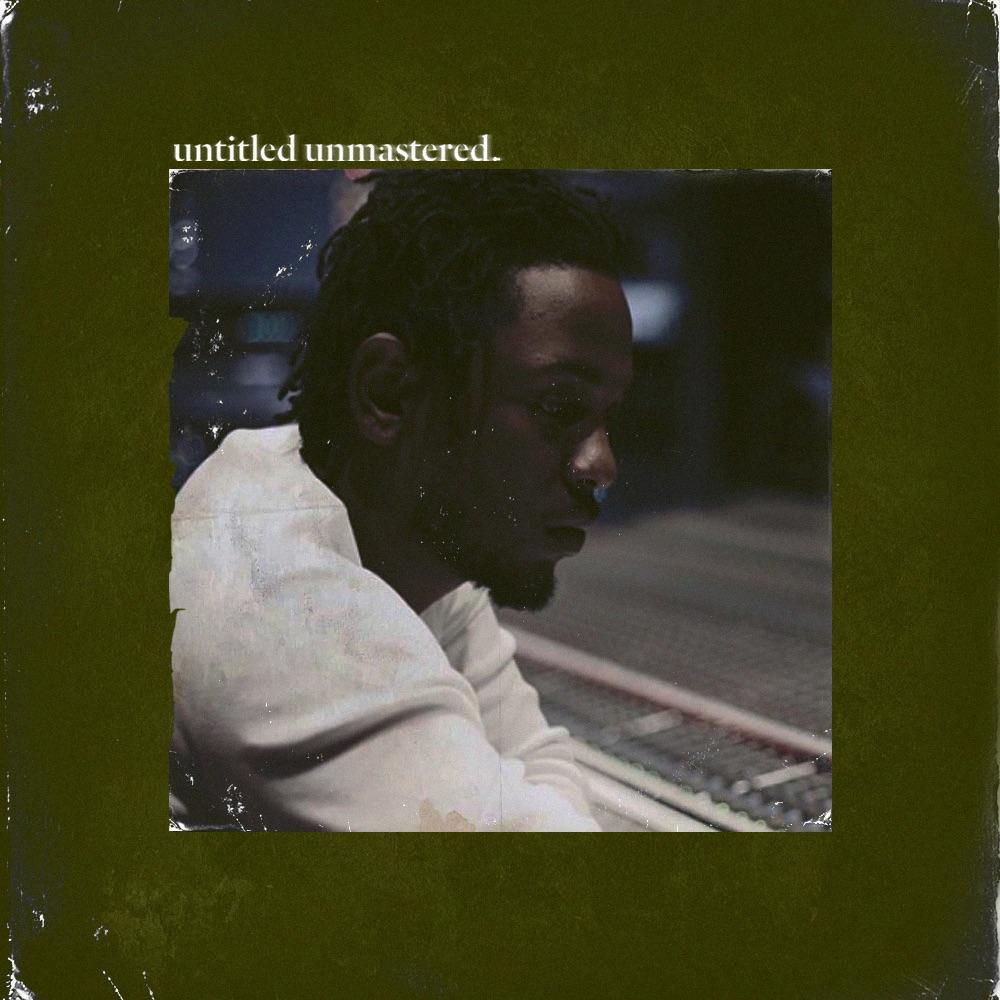
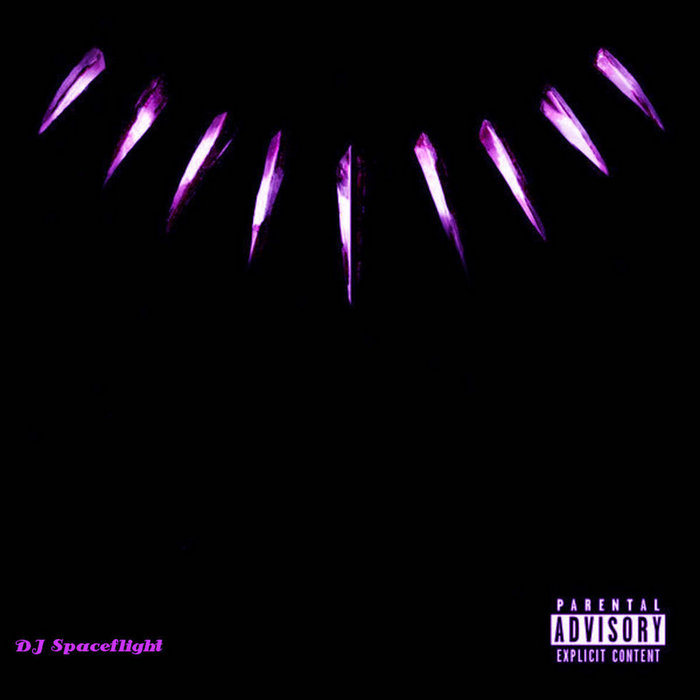

Música
- section 80
- good kid M.a.a.d city
- to pimp a butterfly 
- untitled unmastered 
- Damn
- Black Panther: The Album 
- Mr. Morale & the Big Steppers


Biografía
Kendrick Lamar Duckworth (Compton, Los Ángeles, California, 17 de junio de 1987) es un rapero, compositor y productor discográfico estadounidense. Lamar es ampliamente considerado como uno de los mejores raperos de todos los tiempos y uno de los mejores artistas de su generación gracias a su aclamada obra discográfica que envuelven sus experiencias dentro de la cultura afroamericana y del hip-hop, fusionando géneros musicales progresivos y tópicos de religión, clase social, política, salud mental y conciencia social.123 Criado en Compton, California, Lamar desarrolló un interés por la música y la poesía a una temprana edad. Inspirado por presenciar en vivo como Tupac y Dr. Dre grababan el video musical de California Love en su ciudad, Lamar decidió perseguir una carrera como un rapero. Luego de lanzar varios mixtapes bajo el seudónimo de K-Dot siendo apenas un adolescente, consiguió ganarse un contrato con el sello discográfico independiente Top Dawg Entertainment, con los que lanzaría los álbumes Overly Dedicated (2010) y Section.80 (2011) que le brindarian un masivo seguimiento en Internet y la oportunidad de colaborar con varios artistas importantes en la escena del hip-hop. Poco tiempo después, Lamar abandonaría su faceta independiente al firmar con el sello discográfico de Dr. Dre, Interscope Records, con los cuales produciria su primer gran álbum de estudio, Good Kid, M.A.A.D City (2012). Descrito como un "cortometraje por Kendrick Lamar", el disco es un álbum conceptual que se centra en las experiencias de Lamar como un adolescente en la peligrosa ciudad de Compton; un éxito crítico y comercial, el álbum fue certificado platino, le valió su primer Grammy, y es nombrado uno de los mejores álbumes conceptuales de la historia. Inspirado por una visita a Sudáfrica y la cárcel de Nelson Mandela, su siguiente álbum, To Pimp a Butterfly (2015), incluyó géneros de funk, soul y jazz, y se basa alrededor de sus problématicas de ser un afroestadounidense y sus complejos con su ascendente estatus social. El disco marcó su primer número uno en las listas de éxitos, y es catalogado como uno de los mejores álbumes de la década y de la historia. Dos años después, publicó DAMN. (2017), que incluyó su sencillo más exitoso, HUMBLE., y que también fue un éxito crítico y comercial; el disco se convirtió en el primer álbum en la historia en ganar un Premio Pultizer sin pertenecer al género del jazz ni música clásica. Luego de tomarse un hiato de cinco años, volvería a publicar un álbum con Mr. Morale & The Big Steppers (2022), un doble disco con una fuerte temática acerca de la salud mental, la terapia, el crecimiento personal y el romper barreras sociales. Junto a esto, Lamar fundó su propia agencia creativa, PgLang, junto a su frecuente colaborador Dave Free. Lamar ganó muchos elogios y premios a lo largo de la carrera, incluyendo 13 Premios Grammy de 37 nominaciones de 2014 a 2019. También incluyen dos American Music Awards, cinco Billboard Music Awards, un Brit Award, 11 MTV Video Music Awards, un Pulitzer Prize y una nominación al Óscar. La revista Time lo incluyó entre las 100 personas más influyentes del mundo en 2016.4 En 2015, recibió el premio Generational Icon Award del Senado Estatal de California. Tres de sus álbumes de estudio fueron incluidos en la lista de Rolling Stone de los 500 mejores álbumes de todos los tiempos.
Premios
- premio grammy al mejor album de rap 2023,2018,2016
- grammy a mejor cancion 2023,2018,2016
- grammy a mejor video musical
- entre muchos mas
Noticias
- Kendrick Lamar, por primera vez en CDMX Fue mediante las redes sociales que el festival Axe Ceremonia confirmó a Kendrick Lamar para ser el gran protagonista de su edición del 2024. "¡Nuestros sueños se hicieron realidad! Kendrick Lamar es el primer artista confirmado para AXE Ceremonia 2024", se puede leer en los canales oficiales del festival mexicano. La primera visita de Kendrick Lamar a México se dio en el año 2017 al participar en el Hellow Festival, realizado en el Parque Fundidora, de Monterrey, Nuevo León. Y ahora con su intervención en el festival Ceremonia 2024 será apenas su segunda presentación en nuestro país.
- Finalmente, el Tecate Pal' Norte 2024 reveló los días en que se llevará a cabo tras una gran expectación generada entre sus seguidores. Además, confirmó la participación de Kendrick Lamar, Peso Pluma, Placebo, Blink-182, Keane y muchos más.
- Kendrick Lamar estrena nueva canción en Semana de la Moda en París 2024; así suena En la Semana de la Moda en París 2024, durante la pasarela de Chanel, se reveló una nueva canción del cantante de 36 años, Kendrick Lamar